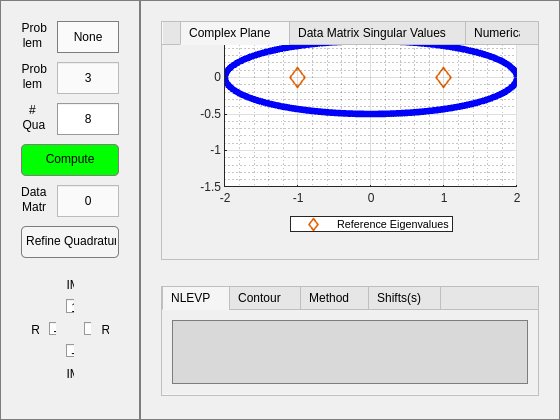
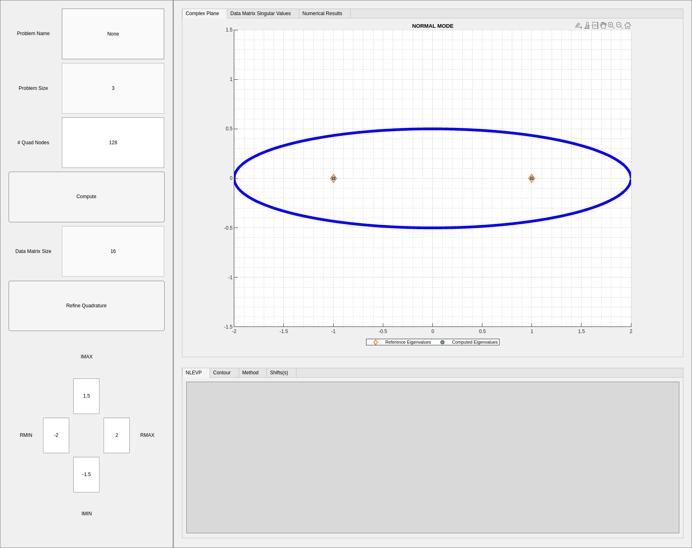
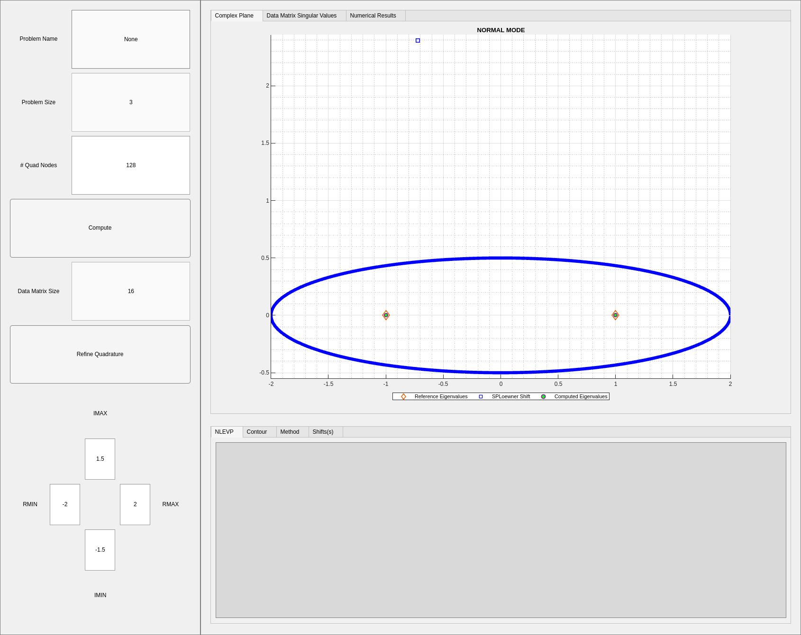
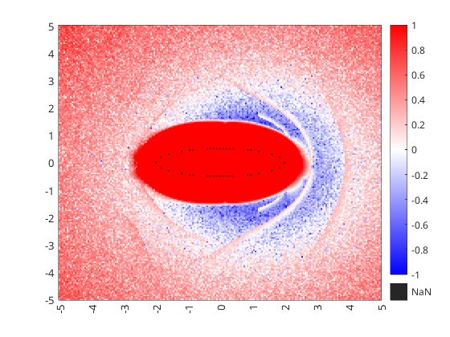
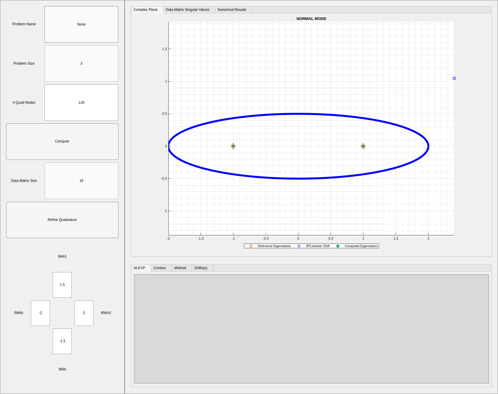
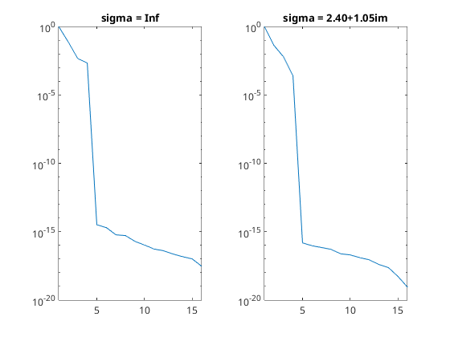

Contents
import Visual.*;
M = [1 0 0;0 1 0;0 0 0];
C = [-2 0 1;0 0 0;0 0 0];
K = [1 0 0;0 -1 0;0 0 1];
T = @(z) z.^2*M + z.*C + K;
n = OperatorData(T,'qep_3.6');
c = Contour.Ellipse(0,2,0.5);
cim = CIM(n,c);
cim.SampleData.OperatorData.refew = [-1;1;1;1;Inf;Inf];
cimtool = CIMTOOL(cim);

cim.setComputationalMode(Numerics.ComputationalMode.Hankel);
cim.SampleData.ell = 2; cim.SampleData.r = 2;
cim.RealizationData.RealizationSize = Numerics.RealizationSize(4,8);
cim.SampleData.Contour.N = 128;
ew = cim.eigs(); ERA_err = gmatch([-1;1;1;1],ew);

ERA vs SPLoewner Heatmap
cim.setComputationalMode(Numerics.ComputationalMode.SPLoewner); cim.eigs;
N = 201; x = linspace(-5,5,N); [X,Y] = meshgrid(x,x); G = X + 1i*Y;
SPLoewner_err = zeros(N,N);
parfor i=1:N
ccim = copy(cim); ccim.ax = [];
for j=1:N
sigma = G(i,j);
ccim.RealizationData.InterpolationData = Numerics.InterpolationData([],sigma);
try
ew = ccim.eigs; SPLoewner_err(i,j) = gmatch([-1;1;1;1],ew);
catch e
SPLoewner_err(i,j) = NaN;
end
end
end

plot
figure(2);
ls_eravspl = log10(SPLoewner_err./ERA_err);
h = heatmap(x,x,ls_eravspl); clim([-1 1]); colormap(redblue(5000));
h.YDisplayData=flip(h.YDisplayData);
CustomXLabels = string(x); CustomYLabels = string(flip(x));
CustomXLabels(mod(x,1) ~= 0) = " "; CustomYLabels(mod(x,1) ~= 0) = " ";
h.XDisplayLabels = CustomXLabels; h.YDisplayLabels = CustomYLabels;
set(get(gca,'xlabel'),'rotation',90)
grid off;

figure(3); tiledlayout(1,2); nexttile;
cim.setComputationalMode(Numerics.ComputationalMode.Hankel);
cim.eigs; Sigma = diag(cim.ResultData.Sigma); Sigma = Sigma / Sigma(1);
plot(1:length(Sigma),Sigma); yscale("log"); xlim([1,length(Sigma)]);
title("sigma = Inf");
nexttile();
[bsn,bsidx] = min(ls_eravspl,[],"all"); sigma = G(bsidx);
cim.setComputationalMode(Numerics.ComputationalMode.SPLoewner);
cim.RealizationData.InterpolationData = Numerics.InterpolationData([],sigma);
cim.eigs; Sigma = diag(cim.ResultData.Sigma); Sigma = Sigma / Sigma(1);
plot(1:length(Sigma),Sigma); yscale("log"); xlim([1,length(Sigma)]);
title(sprintf("sigma = %.2f+%.2fim",real(sigma),imag(sigma)));
fprintf("ERA Error: %e vs Best SPLoewner Error %e\n",ERA_err,SPLoewner_err(bsidx))
ERA Error: 1.437690e-07 vs Best SPLoewner Error 7.784395e-09
 